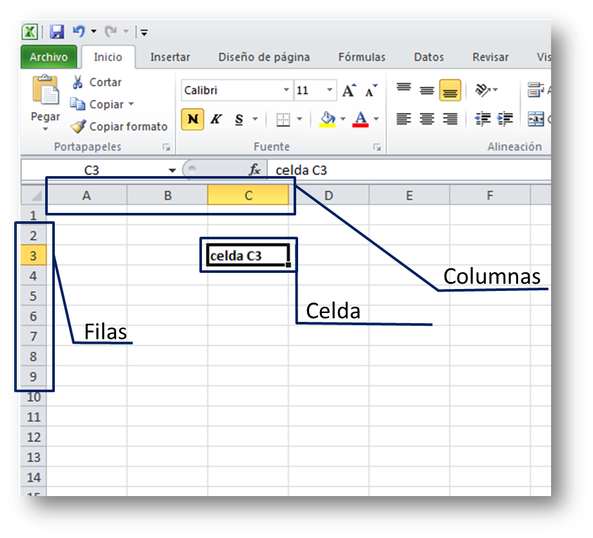
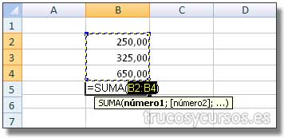

Microsoft Excel es una hoja de cálculo desarrollada por Microsoft para Windows, macOS, Android e iOS.
Cuenta con cálculo, herramientas gráficas, tablas calculares y un lenguaje de programación macro llamado
Visual Basic para aplicaciones. Su hoja principas se divide en filas y columnas para identificar celdas de esta forma:

B E N E F I C I O S
Es un programa que permite crear, asi como manipular, toda clase de tablas de datos, graficos, bases de datos, optimiza el tiempo de la manipulación y el procesamiento de datos. Excel permite mejorar la productividad al facilitar el tratamiento de los datos con funciones como la ordenación, los filtros, la búsqueda. Facilita la presentación de los datos en tablas y gráficos. Además, las tablas y gráficos dinámicos permiten analizar los datos desde diferentes ópticas.
F U N C I Ó N S U M A
La funcion, como su nombre lo indica, suma valores para llegar a un resultado concreto. Puede sumar valores individuales, referencias o rangos de celda.

F U N C I Ó N P R O M E D I O
La funcion promedio cumple la fincion de sumar una serie de valores y despues dividir esas suma por el respectivo numero de valores, de esa forma sacando el promedio de los datos recibidos, esto lo puede hacer con valores individuales o con rangos de celdas.